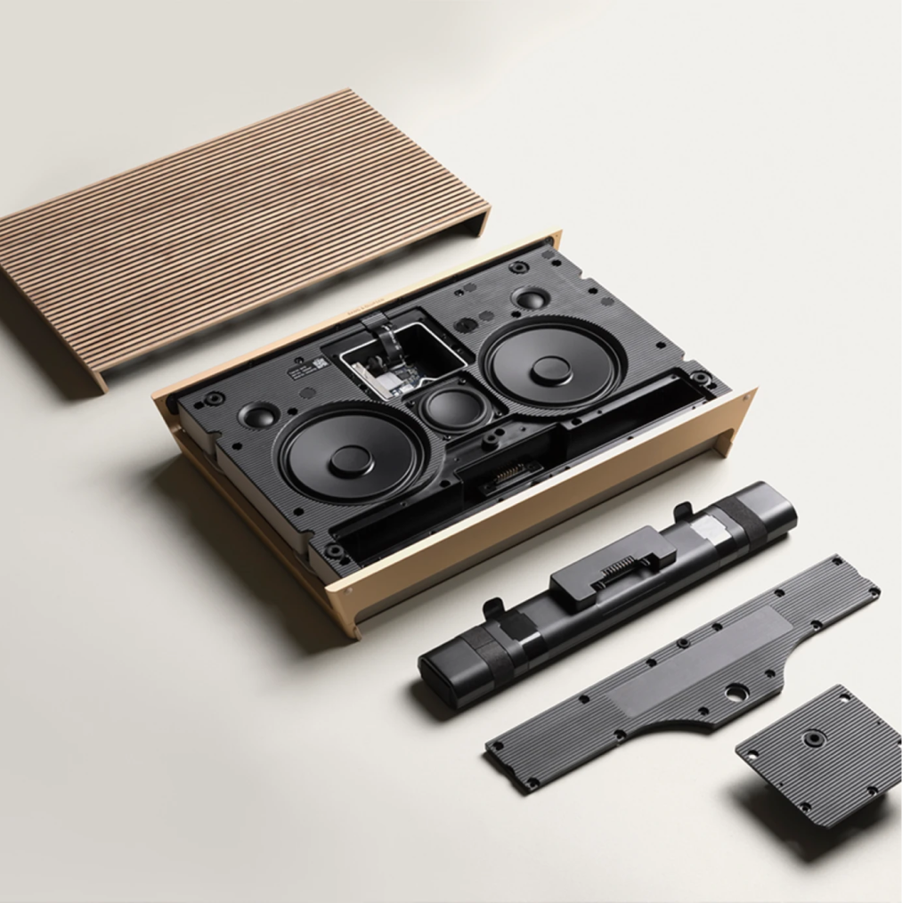
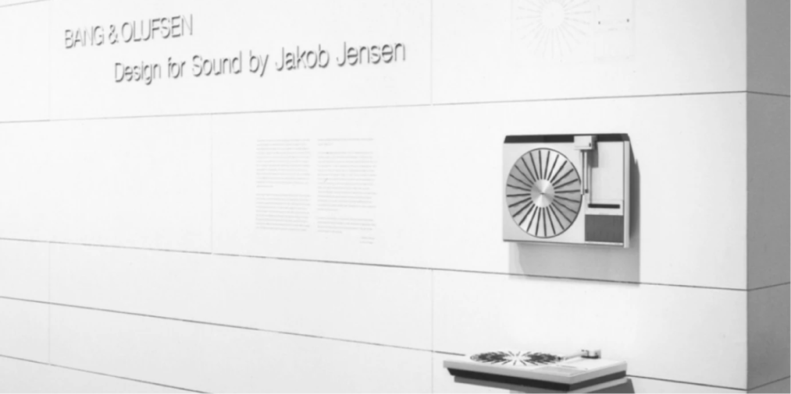
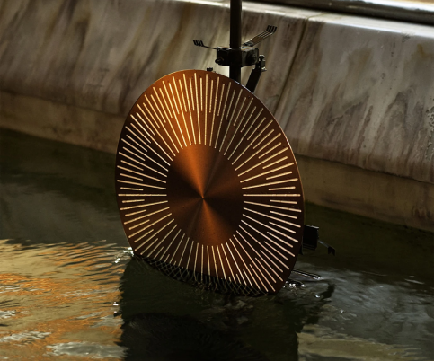
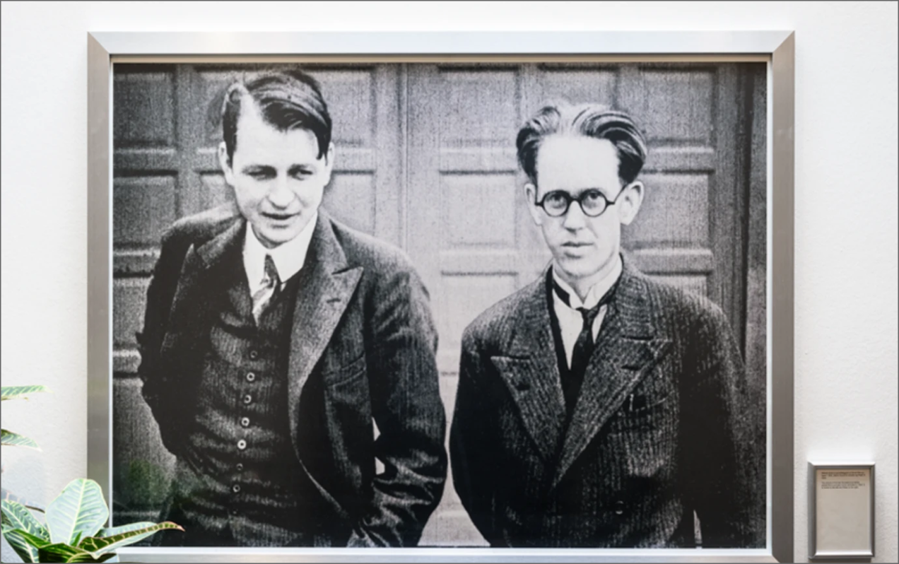
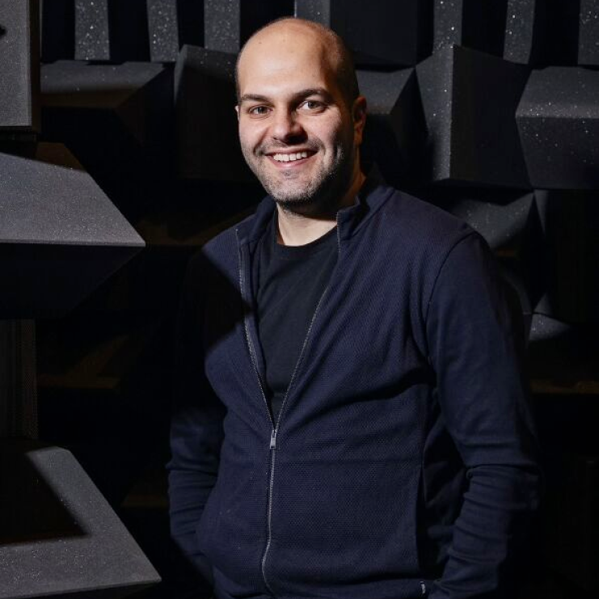

A century of firsts
From the beginning we have not just predicted, but also shaped home design trends. Our century of firsts includes reinventing the turntable and introducing touch-sensitive controls that defined the look of an era. We pioneered the creation of universal remote controls, as well as connected home speaker setups. Our latest speaker technology leads the electronics industry in longevity and upgradeability. And the list goes on.


Our 1960s brand slogan, ‘We think differently’, remains inspiring – rooting us in an approach to design that embraces risk and experimentation.

As part of our efforts to reduce waste, we embrace circular economy principles and promote responsible consumption. We strive to make all components replaceable, customizable and upgradable to extend the life of our products indefinitely. This is a key element of our future direction.
Superior craft since 1925
Since 1925 Bang & Olufsen has been committed to audio innovation and aesthetic excellence, producing the highest standards of sound, craft, and design.

It's all made possible at our factory in Denmark, where we take care of every single step of the process. Expert eyes, hands and ears keep track of everything. We’ve been doing things this way for almost 100 years, because this is how you make products not just for today, but for tomorrow.
“It’s about what the craft means. A chance to transcend generations and keep memories alive. Destined to be kept, not put aside when something new comes along. Whether literally or in our hearts and minds, Bang & Olufsen products last like nothing else.”

Moving towards circularity
There’s a reason our products are icons-and it goes beyond style. They were crafted to last. To stand the test of time. To be passed down through generations. To be admired through ages. And we’re not done yet. We became the first brand in the Consumer Electronics industry to implement the Cradle to Cradle (C2C) Certified standard, which is the most ambitious product certification standard in the world. It focuses on a replaceable, customisable and upgradable approach to product design. Beosound Level was built with product circularity in mind. Not only can customers replace the batteries themselves, they can also customise the speaker covers with new materials and colourways.
Sound Stories
Peter Bang and Svend Olufsen
In 1925, working out of a Danish farmhouse, Peter Bang and Svend Olufsen reinvented the radio, developing The Eliminator, the first mass-produced radio that could be plugged into the wall, without the need for a battery. A century later, that entrepreneurial spirit of innovation lives on in everything we do. It’s what drives us: to change how we all hear, see and feel the world.

Neo Kaplanis technology specialist
“My job is to be perpetually disappointed”
Geoff’s a good listener. In fact he’s so good at listening, it’s his profession. Creating a Bang & Olufsen product is a kind of imaginative alchemy – a creative collaboration transforming the elements of sound, design and craft into a whole greater than the sum of its parts. To make that magic happen you need only the most passionate experts. That’s where Geoff comes in. Alongside a team of engineers, he relentlessly tests the sound of new speakers and headphones during their design, using his finely-tuned ear to fine-tune each product he helps develop.
Geoff Martin Tonmeister
“My job is to be perpetually disappointed”
Geoff’s a good listener. In fact he’s so good at listening, it’s his profession. Creating a Bang & Olufsen product is a kind of imaginative alchemy – a creative collaboration transforming the elements of sound, design and craft into a whole greater than the sum of its parts. To make that magic happen you need only the most passionate experts. That’s where Geoff comes in. Alongside a team of engineers, he relentlessly tests the sound of new speakers and headphones during their design, using his finely-tuned ear to fine-tune each product he helps develop.